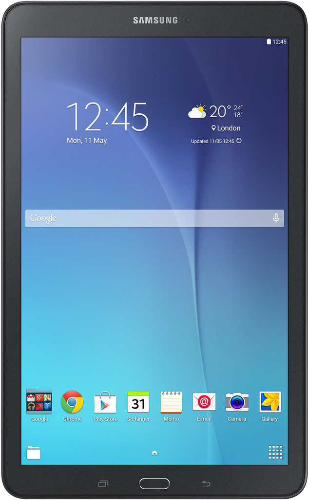

Samsung Galaxy Tab E 9.6 (SM-T560) (samsung-gtelwifi)
Jump to navigation
Jump to search
|  | |
| Manufacturer | Samsung |
|---|---|
| Name | Galaxy Tab E 9.6 (SM-T560) |
| Codename | samsung-gtelwifi |
| Released | 2015 |
| Category | testing |
| Original software | Android 4.4.4 on Linux 3.10.17 |
| postmarketOS kernel | 3.10.17 |
| Hardware | |
| Chipset | Spreadtrum SC7730SE |
| CPU | 4x 1.3 GHz Cortex-A7 |
| GPU | Mali-400 MP2 |
| Display | 800x1280 TFT |
| Storage | 8 GB |
| Memory | 1.5 GB |
| Architecture | armv7 |
{kind=link}
| USB Networking |
Works
|
|---|---|
| Flashing |
Works
|
| Touchscreen |
Works
|
| Display |
Works
|
| WiFi |
Works
|
| FDE | |
| Mainline |
Broken
|
| Battery |
Works
|
| 3D Acceleration | |
| Audio |
Broken
|
| Bluetooth | |
| Camera | |
| GPS | |
| Mobile data |
Unavailable
|
| SMS |
Unavailable
|
| Calls |
Unavailable
|
| USB OTG | |
| NFC |
Unavailable
|
| Accelerometer | |
|---|---|
| Magnetometer | |
| Ambient Light | |
| Proximity | |
| Hall Effect | |
| Ir TX |
Unavailable
|
|---|---|
| TrustZone | |
Contributors
Maintainer(s)
Users owning this device
User Interfaces
- Gnome starts but is pretty unusable
- Phosh/Plasma Mobile do not work (require mainline)
- Xfce4 works
Installation
-
pmbootstrap init pmbootstrap install --android-recovery-zippmbootstrap flasher --method=adb sideload
![[1]](https://postmarketos.org/static/img/2017-12/xfce4-i9505.jpg){kind=link}
![[2]](https://wiki.postmarketos.org/images/8/83/Corekeyboard.jpg){kind=link}
What works
- Flashing rootfs and kernel via TWRP
- Screen
- Touchscreen
- WiFi
What doesn't work
- Audio
- USB-OTG
- charging sdl
Additional notes
- ADB sideload stops at 50%, but it actually succeeds.
- The power button instantly shuts down the entire system
- LightDM Hangs after a while but can be restarted from USB/SSH
- Some audio devices do show up, but they don't actually work.
How atipls made wifi work
How atipls made wifi work (with a bit of confusing detours). Inspired by the (sort of) helpful How_bonsaiblue_made_wifi_work.
- Since the kernel provided by Samsung has built-in support for the BCM4343, enabling it was enough to get wlan0 to show up.
- I actually have tried loading it as a kernel module, which ended up with horrible messages like
no wifi platform data, skipandDHD wifi platform data is required for Android build
- I actually have tried loading it as a kernel module, which ended up with horrible messages like
- Grab nvram_mfg.txt and bcmdhd_mfg.bin from /etc/wifi from either a stock install or an unofficial lineageos port.
- I have also tried
firmware-aosp-broadcom-wlan, but the firmware seems to be newer than wanted thus either not loading or straight up soft bricking the OS.
- I have also tried
- Bring the interface up:
$ ip link set wlan0 up - Use XFCE4's menu or
nmtuito connect to a wifi network.
Useful key combinations
- home + volume up + power: flash mode (TWRP)
- home + volume down + power: reboot
See also
- Specs on GSMArena.com
- Wikipedia page
- Kernel source
- pmaports!1355 Initial merge request
- Device package
- Kernel package
- samsung-gtel3g (mostly similar device)